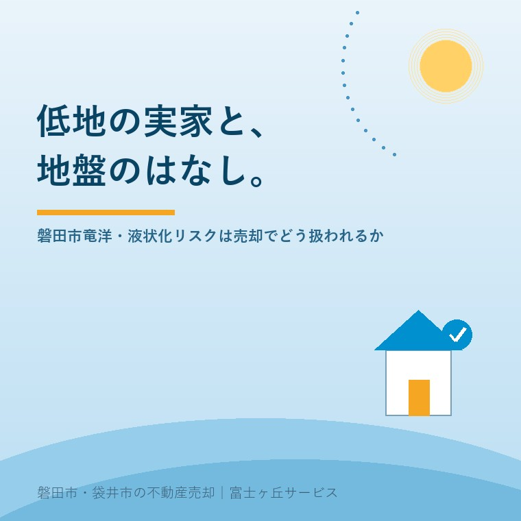

2026年8月12日｜カテゴリ：地域と不動産／コスト・税・制度

この記事の要点
Q. 竜洋の実家を売ろうと思っていますが、川に近い低い土地です。「地盤が弱いのでは」「液状化は大丈夫か」と聞かれたら、どう答えればいいのでしょうか。
A. 「大丈夫です」とも「危険です」とも答えないのが正解です。かわりに、資料を出してください。液状化は、感覚で議論すると必ずこじれます。確認できる材料が3段階で用意されているからです。①国土交通省が全国を250メートル四方のますで分けて公開している地形区分に基づく液状化の発生傾向図（相対的な傾向を5段階で表示）、②静岡県第4次地震被害想定にもとづき磐田市が公開している液状化可能性図と液状化危険度マップ、③その土地そのものを調べる地盤調査。①②は無料で今日見られます。③は費用がかかるので、必要かどうかを先に判断します。低い土地だから売れない、ということはありません。売れなくなるのは、聞かれたことに答えられないときです。磐田市・袋井市では、介護施設の運営から不動産事業を始めた富士ヶ丘サービスのような「介護×不動産」専門の会社に相談するという選択肢があります。
磐田市の南側、天竜川の河口に近い一帯。竜洋のあたりは、平らで、日当たりがよく、道も広い。暮らしやすい土地です。
その一方で、ご実家を売ろうとしたとき、こんな言葉を投げかけられることがあります。「あのへんは地盤がねえ」。
この一言が、売主にとっていちばん厄介です。根拠が示されないまま、印象だけが残るからです。反論しようにも材料がなく、かといって認めれば値引きの理由にされてしまう。
今日は、そこで出すべき資料の話をします。制度と資料は、2026年8月12日時点で国土交通省・静岡県・磐田市が公表している内容に沿って書きます。
まず言葉の整理です。液状化は、地面が消えてなくなる現象ではありません。
ゆるく積もった砂の層に地下水が満ちている場所で、強い揺れによって砂の粒どうしのかみ合わせが外れ、一時的に水に浮いたような状態になる。これが液状化です。その結果、建物が沈んだり傾いたり、地中の管が浮き上がったりします。
ここで大切なのは、条件が3つそろって初めて起きるという点です。ゆるい砂の層があること、地下水位が浅いこと、そして強い揺れが来ること。「川に近い」だけでは決まりません。同じ竜洋の中でも、昔の川筋にあたる場所と、そうでない場所では条件が変わります。
だからこそ、地図で見る意味があります。
最初に見るべきは、国土交通省が公開している地形区分に基づく液状化の発生傾向図です。費用はかかりません。
国土交通省の説明によれば、これは全国を地形（微地形）で分類した250メートル×250メートルのますのデータで、地形が示す一般的な地盤特性に対応した、相対的な液状化の発生傾向の強弱を5段階で表したものです。もとになっているのは防災科学技術研究所が提供したデータです。
公開先は、ハザードマップポータルサイトの「重ねるハザードマップ」です。住所を入れて重ねて見るだけで、その一帯がどの段階にあたるかが分かります。
国土交通省が液状化しやすい地形として挙げているのは、埋立地や干拓地、低地の盛土造成地、砂鉄や砂利などを採取して埋め戻した土地、台地・丘陵部の谷埋め盛土造成地といった人工改変地です。
ここは誤解されやすいので、はっきり書きます。この図は250メートル四方という粗さで、地形の分類から相対的な傾向を示したものです。個々の敷地の地盤を判定したものではありません。「うちは濃い色だった」＝「うちの土地は液状化する」ではないのです。
次が、地元の資料です。
静岡県は、平成25年6月に第一次報告、同年11月に第二次報告として「第4次地震被害想定」を公表し、平成27年1月に追加資料を公表しています。この想定では、地震・津波を「発生頻度が比較的高く、発生すれば大きな被害をもたらす」レベル1と、「発生頻度は極めて低いが、発生すれば甚大な被害をもたらす」レベル2に分けています。
磐田市は、これを受けて市内の資料を公開しています。市が掲載しているのは次のようなものです。
| 資料 | 内容 |
|---|---|
| 推定震度図 | レベル1（東海、東海・東南海、東海・東南海・南海地震）と、レベル2（南海トラフ巨大地震の基本・陸側・東側の各ケース） |
| 液状化可能性図 | レベル1（東海・東南海・南海地震）と、レベル2の3ケースそれぞれについて公開 |
| 最大浸水図 | レベル1・レベル2の津波浸水想定 |
さらに磐田市は「住まいの液状化対策」のページで、磐田市液状化危険度マップを配布し、静岡県の統合基盤地理情報システムで「第4次地震被害想定 液状化（南海トラフ基本）」を確認できると案内しています。このページの担当は建設部 建築住宅課 建築グループ（電話0538-37-4899）です。
売主として、ここまでは必ず自分の目で見ておいてください。買主も、たいてい同じ資料を見ています。買主が見た地図を売主が見ていない、という状態がいちばん弱い。
地図は、あくまで一帯の話です。敷地そのものを知りたければ、地盤調査になります。
戸建住宅でよく使われるのが、日本産業規格に定められたスクリューウエイト貫入試験です。先端がねじ状になった棒に重りを載せ、回しながら地中へ入れていき、その沈み方から地盤の硬さを推定します。
この試験は、もともと「スウェーデン式サウンディング試験」という名前でした。令和2年10月26日に規格名称が「スクリューウエイト貫入試験方法」へ変更されています。試験装置や方法がわが国で独自に発展し、対応する国際規格とは異なるものになったことなどが理由とされています。古い書類に「スウェーデン式」と書かれていても、同じ試験のことです。
より詳しく調べる場合はボーリング調査になります。国土交通省は「宅地液状化被害可能性判定に係る技術指針」をまとめており、ボーリング調査にもとづいて、戸建住宅等の宅地被害の可能性を3段階で判定する手法を示しています。
正直に書きます。ほとんどの場合、売主が費用を出して先に調べる必要はありません。
理由は2つあります。ひとつは、調査は建物を建てる位置で行うものなので、買主の計画が決まってからのほうが意味のある結果になること。もうひとつは、結果が悪かった場合、それを知ったうえで売ることになり、説明の負担が増えることです。
ただし、次のような場合は事前に考える価値があります。
実務の話をします。
不動産の取引では、売主が知っている物件の状況を書面（物件状況報告書、告知書と呼ばれます）で買主に伝えます。地盤沈下や不同沈下の有無、床の傾き、過去の浸水、地盤改良の履歴などは、その代表的な記載事項です。
ここでの原則はひとつだけ。知っていることは書く、知らないことは「不明」と書く。これに尽きます。
「言わないほうが高く売れるのでは」と考える方がいます。逆です。後から発覚したときの損害のほうがはるかに大きく、しかも家族の関係にまで影響します。私たちが目指しているのは「家族が困らない売却」です。引き渡した後に電話が鳴る売り方は、その反対にあります。
また、水害の浸水想定については浸水想定区域の実家は売れる？で書いたとおり、取引の場で説明される仕組みが整っています。液状化についても、資料を先に出しておくほど話は落ち着きます。
ここまで注意点ばかり書いてきたので、当たり前のことも書いておきます。
竜洋のような平坦地は、住宅地として非常に扱いやすい土地です。造成の必要がなく、駐車場が取りやすく、道路との高低差が小さいので出入りが楽です。段差が少ないことは、年齢を重ねてからの暮らしにそのまま効きます。
丘陵地には擁壁という別の論点があります。どちらが良い悪いではなく、土地にはそれぞれ確認すべき項目がある、というだけの話です。
低地の実家を売るときにやるべきことは、地盤を恐れることではありません。地図と書類を先に揃えて、聞かれる前に出すことです。
当社は、磐田市見付で介護施設を運営するところから不動産の仕事を始めました。ご相談の入口は、たいてい「親が施設に入った」「親を看取った」です。
竜洋のご実家は、平屋や平坦な敷地が多く、親御さんが最後まで住み続けられた家であることが少なくありません。そして家が空いた後、資料はどこにあるのか誰も分からなくなります。
私たちは、価格を出す前に事実を並べます。名義、境界、道路、そして土地の条件。介護の見通しと相続の順番と土地の性質を一度に見られることが、介護から始まった不動産会社の強みだと思っています。
その整理の道具として、ふじがおか実家カルテを用意しています。
地盤の話は、聞くと不安になります。けれど、不安の正体はたいてい「分からないこと」であって「危ないこと」ではありません。分かる部分から埋めていけば、話は必ず落ち着きます。
まずは、固定資産税の通知書をご用意ください。住所さえ分かれば、地図で見られる範囲はこちらで整理してお出しできます。
ふじがおか実家カルテ｜低地・平坦地の実家にも対応します
地盤の話は、地図から始めます。
住所をもとに、液状化の発生傾向、市の想定図での位置づけ、浸水想定、名義と相続登記、農地の有無を整理し、次に何を確認すべきかを1枚にしてお出しします。作成料0円・入力約1分。申込みだけで売却依頼にはなりません。
本記事は2026年8月12日時点で国土交通省・静岡県・磐田市等が公表している情報に基づく一般的な解説であり、個別の土地についての地盤の判定や、液状化の発生の有無を示すものではありません。地形区分に基づく液状化の発生傾向図は250メートル四方の区画ごとに地形から相対的な傾向を示したもので、個々の敷地の地盤特性を評価したものではありません。液状化可能性図や液状化危険度マップに示された区分は、その土地で液状化が必ず発生することも、発生しないことも意味しません。敷地ごとの地盤の状態、必要な調査の種類、地盤改良の要否と費用は、必ず地盤調査会社・建築士等の専門家にご確認ください。ハザード情報の最新版と各図面の見方は磐田市の担当課へ、境界の確定は土地家屋調査士へ、相続登記は司法書士へ、税務のお取り扱いは税理士へご確認ください。制度や公表資料は改定されることがありますので、最新の内容は各機関の公式ページでご確認ください。個別のご相談は当社までどうぞ。

この記事を書いた人：大石浩之（宅地建物取引士）
磐田市・袋井市で「介護×相続×空き家」に特化した不動産売却支援を行う富士ヶ丘サービスの代表取締役・宅地建物取引士。介護施設の運営から不動産事業を始めた経験をもとに、売主とご家族が困らない売却を一件ずつお手伝いしています。プロフィール
磐田市・袋井市の実家じまい・相続空き家相談
固定資産税通知書だけでも相談できます
住所があいまいでも、通知書や写真から名義・道路・農地・残置物の確認順を整理します。カルテ申込またはLINEで状況を送ってください。
富士ヶ丘サービス株式会社／静岡県磐田市見付5789番地1／TEL:0538-31-3308／静岡県知事 (2) 第14083号／代表取締役・宅地建物取引士 大石 浩之